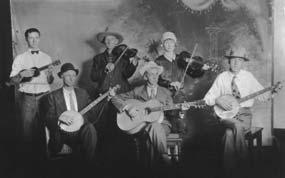

Back Porch Tunes
Back Porch Tunes
Fiddle Tune Chords
Fiddle Tune Chords
source (.doc)
Fiddle Tune Chords (the ones we play)
Fiddle Tune Chords (pruned)
source (.doc)
California Bluegrass Association jam tunes
2011 CBA Jams